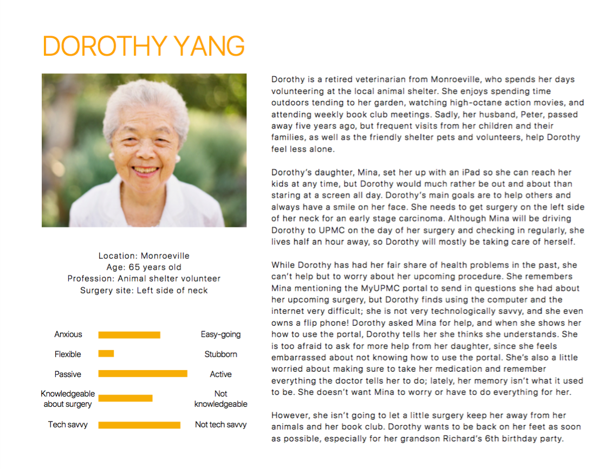
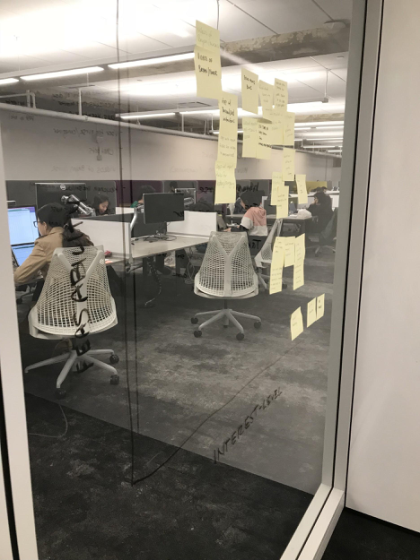

Hebo
A personal post-operative companion and assistant

A personal post-operative companion and assistant
After undergoing surgery, patients often have questions and concerns about their post-operative treatments. Therefore, patients require support from clinical staff over the phone or in the clinic to address common concerns. With these overwhelming amount of phone calls, staff members often have to dedicate significant portions of time after hours to answer all these calls.
Our team conducted numerous stages of research, ideation, prototyping, and testing to finally create Hebo, a post-operative care digital assistant that used voice, text, and images to convey care information and instructions to patients.
For this project, I helped planned out the different design stages as the project manager to ensure we met deadlines. I played a bigger role on the user research and testing phase in which I empathized and interacted directly with hospital staffs and patients.
Role: Project manager and UX designer
Tasks: User Research, Interaction Design, Prototyping & Testing
Duration: 5 months
Our team created a plan to identify our research goals and methods we planned to use to understand the current state and empathize with patients and hospital staffs. We created the following hunt statement to guide our research.
In order to successfully address the post-operative concerns of carcinoma patients, we will work to understand the patient mindset, identify the challenges that patients face, and explore media that are optimal for communicating relevant post-operative solutions.
We chose research methods that would best convey not only the breakdowns in the care process, but also the mindsets of both patients and nurses.
After we gathered all information from our research, we synthesized our findings by clustering our insights, created different personas, models, and journey maps.
Key Insights
Personas
From all our research, we created detailed personas to build empathy with our target users.
Here is an example of one of our personas:
Cultural Model
A cultural model attempts to capture the relationships between stakeholders of a given system and the central motivations that drive their actions. Mapping out the relationships between and motivations of each of the players helped us get a better sense of how the system functions as a whole.

Sequence Flow Model
Sequence flow models are used to analyze the steps a stakeholder takes in a given procedure, including identifying touch points and breakdowns. Our model describes the average process a patient experience from scheduling their surgery to their final follow-up.
We were able to pinpoint three major breakdowns of inefficiency in the patient’s current surgery timeline:
These points could be potential opportunities for our intervention and were the springboards for many of our solutions.

To proceed with our ideation process, we began a visioning session to brainstorm possible solutions. Afterwards, we placed all the ideas onto a matrix that measure the user’s value against the feasibility of the idea.
Storyboards
From there, our team narrowed down the top ideas and identified three solutions to further develop and explore: a wound care simulation tutorial, a personalized patient pamphlet, and a machine learning-driven wound checker application. We further developed what the experience of the three solutions would be by developing a script and visuals for storyboards.
Educational Simulation Training

Personalized Information Pamphlet

Machine Learning Assessment App

We shared our ideas to the client and they wanted a more focused post-operative intervention. Therefore, we did a group brainstorming session with our clients to come up with new ideas.
Our team decided to parallel prototype 2 possible solutions to which was the chatbot and the interactive tutorial on post-operative care.
The chatbot was supposed to be an intelligent FAQ. To test the chatbot, we used the Wizard-of-Oz technique, where we pretended to be the chatbot and asked participants to interact with ‘us’.
For the interactive tutorial, we created a storyline that incorporates instructions taken from the original care sheet in order to teach patients how to care for themselves and prompt any questions that may arise once they get home.
Insights from testing
For this new iteration of our solution, we wanted our product to be a chatbot with limited conversation topics designed to answer questions specific to the patient’s surgery experience using voice and visuals.
We performed multiple users testing session with different stages of our prototype. Participants were invited to spend some time interacting with Hebo while performing a think-aloud and then follow-up in a brief interview.
User's flow on app

Onboarding screens

Sample interactions with Hebo

Due to the short timeline, our team worked to create a proof of concept that provides evidence that the personal assistant, Hebo, would help decrease the amount of patient calls.
Our diary study was a major way that we collected patient concerns and questions that our client previously was not aware that patients had. This research method surprisingly reduced the number of phone calls as patients were jotting down non-urgent questions in their diary to ask during the next follow-up appointments instead of calling in. Therefore, this can be a new feature we can add to Hebo.
In order to build out a successful and comprehensive chatbot interface for patients, Hebo’s scope must be expanded to all aspects of patient care. Our team created a detailed transition and feasible scalability plan that allow the introduction of Hebo to multiple different clinicians serving Mohs surgery patients.